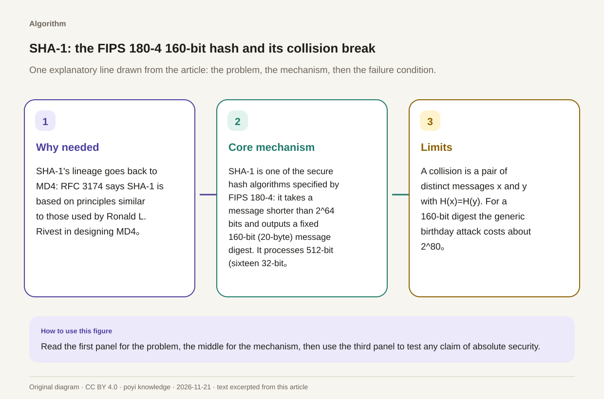
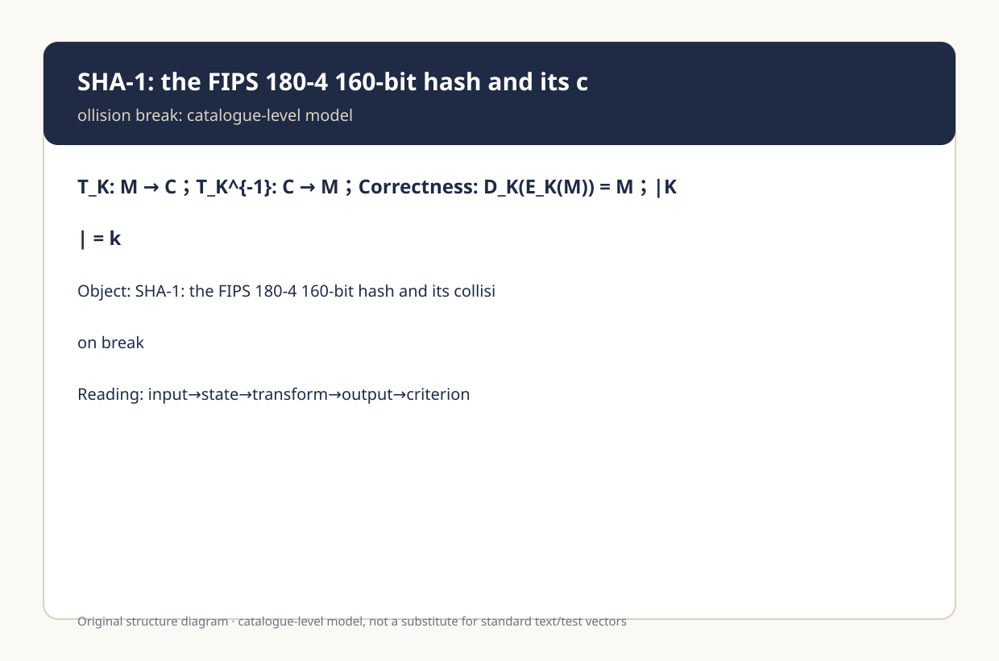

Principles
Algorithm: SHA-1 (SHA-1 散列). SHA-1 is one of the secure hash algorithms specified by FIPS 180-4: it takes a message shorter than 2^64 bits and outputs a fixed 160-bit (20-byte) message digest. It processes 512-bit (sixteen 32-bit word) blocks, and its internal state is five 32-bit words H0…H4. RFC 3174 (September 2001, Informational) makes the same algorithm, its C reference code and its test driver conveniently available to the Internet community, and states that it does not specify an Internet standard; this article follows FIPS 180-4 for the algorithm description and RFC 3174 for the test vectors. The padding rule is: append a single 1 bit (an 0x80 byte in implementations), then the smallest number of 0 bits that makes the bit length congruent to 448 modulo 512, and finally a 64-bit representation of the message length before padding (most significant byte first, i.e. big-endian). Padding is applied even when the length is already congruent. For "abc" (24 bits), the padded block is 64 bytes: 61 62 63 80, then 52 00 bytes, then the 8-byte length 00 00 00 00 00 00 00 18. Read as 32-bit words, X[0] = 0x61626380, X[15] = 0x00000018, and the rest are zero. The padded message is parsed into N 512-bit blocks, each block being sixteen 32-bit words M(0)…M(15). SHA-1's initial hash value is:
H0 = 67452301
H1 = efcdab89
H2 = 98badcfe
H3 = 10325476
H4 = c3d2e1f0
The first sixteen schedule words are the block words; for 16 ≤ t ≤ 79 the expansion is
W(t) = ROTL1(W(t−3) xor W(t−8) xor W(t−14) xor W(t−16))
where ROTL1 is a 32-bit left rotation by one position. The 80 steps use three logical functions: steps 0–19 use the conditional select Ch(x,y,z) = (x and y) xor (not x and z); steps 20–39 and 60–79 use the parity function x xor y xor z; steps 40–59 use the majority function Maj(x,y,z) = (x and y) xor (x and z) xor (y and z). The four stage constants are 0x5a827999 (0–19), 0x6ed9eba1 (20–39), 0x8f1bbcdc (40–59) and 0xca62c1d6 (60–79). Each step computes
T = ROTL5(a) + f(t,b,c,d) + e + K(t) + W(t)
e ← d
d ← c
c ← ROTL30(b)
b ← a
a ← T
All additions are 32-bit additions modulo 2^32, and ROTL5 and ROTL30 are left rotations by 5 and 30 positions. After the 80 steps of a block, the working variables are added back to the incoming hash value: H0←H0+a, H1←H1+b, H2←H2+c, H3←H3+d, H4←H4+e. After all blocks are processed, the 160-bit digest is the concatenation H0 H1 H2 H3 H4. SHA-1 has 80 steps divided into four 20-step stages by function and constant.

Why it matters
SHA-1's lineage goes back to MD4: RFC 3174 says SHA-1 is based on principles similar to those used by Ronald L. Rivest in designing MD4, and is modelled after MD4. Its predecessor SHA-0 was first published in 1993 and SHA-1 in 1996; SHA-0 is SHA-1's predecessor and the two differ only by a single rotation in the message-expansion function, and NIST withdrew SHA-0 in 1996. RFC 6194 therefore says "it is not prudent to use either" SHA-0 or SHA-1 when collision resistance is required, and that any use of SHA-0 is strongly discouraged.
A 160-bit digest has a birthday bound of 2^80: on an ideal hash function, finding "any two messages with the same digest" costs about 2^80 operations, while a 128-bit digest gives 2^64. SHA-1's 80 steps, four 20-step stages and per-step message-schedule word spread a local change over more rounds. RFC 3174 also notes that signing the "digest rather than the message often improves" efficiency because the digest is much smaller, and that the verifier must use the same hash algorithm as the signer.
The standard does not give a security proof. RFC 3174 says SHA-1 is called secure because it is computationally infeasible to find a message for a given digest or two messages with the same digest - the security assumption of its time, not a mathematical theorem or a permanent guarantee of collision resistance. The later attacks broke exactly at the edge of that assumption.
Applications
SHA-1's typical use is digital signatures: compute a message digest, then feed the digest to a signature algorithm for signature generation or verification; FIPS 180-4 also includes SHA-1 in the Secure Hash Standard. Even in 2017 it was still widely used for document signatures and TLS certificate signatures, and in software such as Git for integrity and backup. The SHAttered paper lists the Git version-control system as one of the software examples where SHA-1 was still widely used in 2017.
HMAC-SHA-1 is a different use: HMAC uses SHA-1 as a keyed message authentication code rather than as a collision-resistant hash. RFC 6194 section 3.3 says that as of 2011 there is no indication that attacks on SHA-1 can be extended to HMAC-SHA-1. RFC 2202 section 3 provides seven HMAC-SHA-1 conformance test cases; case 2 uses key "Jefe" and message "what do ya want for nothing?", with digest effcdf6ae5eb2fa2d27416d5f184df9c259a7c79.
NIST's current policy separates the uses carefully: Table 8 of SP 800-131A Rev. 2 marks SHA-1 digital signature generation as "disallowed" except where "specifically allowed by NIST protocol-specific guidance", digital signature verification as "legacy use", and non-digital-signature applications as "acceptable"; the notes after the table repeat these three points. RFC 6194 concludes that SHA-1 provides less collision resistance than expected, and that protocol designers should strongly consider supporting a stronger hash; SHA-256 was the most commonly specified alternative at the time.
To be explicit: "acceptable" here covers only uses "that do not require collision resistance"; no new design that requires collision resistance should use SHA-1. The SHAttered paper also records that after the 2015 freestart-collision cost estimates, the CA/Browser Forum withdrew its ballot to extend SHA-1 HTTPS certificate issuance, and the IETF TLS 1.3 specification deprecated SHA-1 digital signatures.

Limits & attacks
A collision is a pair of distinct messages x and y with H(x)=H(y). For a 160-bit digest the generic birthday attack costs about 2^80; SHA-1's collision resistance was pushed below that bound step by step after 2005. RFC 6194 section 3.1 records that the first SHA-1 attack in early 2005 targeted a version "reduced to 53 rounds. The very next month" Wang, Yin and Yu "showed collisions in the full 80 rounds in" about 2^69 operations; as of 2011 no published result improved on that result. RFC 6194 also states that SHA-1's "collision security strength is significantly less than" the ideal hash function's 2^80.
In 2013 Stevens presented the then-best collision attack on full SHA-1, with an estimated cost of about 2^61 compression-function calls. In 2017 Stevens, Bursztein, Karpman, Albertini and Markov provided the first known collision instance for full SHA-1: two PDF documents with the same SHA-1 hash but different visual contents. The collision cost was equivalent to about 2^63.1 SHA-1 compressions and took approximately 6,500 CPU years and 100 GPU years; the authors say this is still more than 100,000 times faster than a brute-force search. That result moved SHA-1 collisions from a theoretical possibility to an actual computation.
In 2020 Leurent and Peyrin reported the first practical implementation of a SHA-1 chosen-prefix collision: the attacker can make two colliding messages begin with two arbitrary distinct prefixes, which is more dangerous than a plain (identical-prefix) collision. The chosen-prefix collision has complexity about 2^63.4 (about 2^61.2 for a plain collision); the actual computation used 900 Nvidia GTX 1060 GPUs for two months, and the authors estimate a cost of about US$45,000 (about US$11,000 for a plain collision). In the PGP demonstration, the attacker creates two keys with different identities and colliding SHA-1 certificates, so that a third party's certification signature on Bob's key transfers to Alice's forged key, yielding impersonation. The authors conclude that SHA-1 should not be used in any security protocol where some kind of collision resistance is expected; continued use of SHA-1 for certificates or for authentication of handshake messages in TLS or SSH is dangerous, and they strongly advise removing SHA-1 support.
What was broken is collision resistance, not every property:
- Pre-image and second pre-image: RFC 6194 section 3.2 says "There are no known pre-image or second pre-image attacks" specific to full-round SHA-1; however, a general result for narrow-pipe Merkle-Damgård hashes finds a second pre-image for a 60-byte message in about 2^106 computations. The best reduced-round pre-image attack is on 48 of 80 rounds with complexity 2^159; the RFC cautions that reduced-round results indicate a security margin, not an attack on the full algorithm. - HMAC-SHA-1: RFC 6194 section 3.3 says that as of 2011 there is no indication that attacks on SHA-1 can be extended to HMAC-SHA-1. This is consistent with NIST marking SHA-1's non-signature uses as acceptable; but it only says the known collision attacks have not extended to HMAC, not that HMAC-SHA-1 is safe in every setting.
On the governance side, the SHAttered paper says SHA-1 is a 1995 NIST standard and was officially deprecated by NIST in 2011 because of fundamental security weaknesses demonstrated by cryptanalysis; RFC 6194 records that NIST recommended against generating digital signatures with SHA-1 after 31 December 2010, and specified that U.S. federal agencies must not generate SHA-1 signatures for sensitive but unclassified information after 31 December 2013. Systems that still use SHA-1 today should restrict it to legacy settings that do not need collision resistance and replace it under a migration plan.
History
- 1993: SHA-0 is first published; RFC 6194 records that NIST withdrew SHA-0 in 1996. - 1995–1996: the SHAttered paper calls SHA-1 a 1995 NIST standard; RFC 6194 records that SHA-1 was first published in 1996. SHA-0 is SHA-1's predecessor and the two differ only by a single rotation in the message-expansion function. - September 2001: RFC 3174 is published, collecting the SHA-1 algorithm, C code and test vectors in an Informational document. - 2005: Wang, Yin and Yu show collisions in the full 80 rounds in about 2^69 operations; about a month earlier, the first attack had targeted a version reduced to 53 rounds. - March 2011: RFC 6194 is published, summarizing the security considerations for SHA-0 and SHA-1 and giving protocol-design guidance; around the same time NIST officially deprecated SHA-1 for digital signatures. - 2013: Stevens gives an estimated full-SHA-1 collision cost of about 2^61 compression-function calls. - 2017: the SHAttered result is published at CRYPTO 2017 (LNCS 10401, pp. 570-596), giving the first actual collision instance. - March 2019: NIST SP 800-131A Rev. 2 is published; its Table 8 gives the current status of SHA-1 for signature generation, signature verification and non-signature applications. - August 2020: the Shambles result is published at the 29th USENIX Security Symposium, giving the first practical chosen-prefix collision and a PGP/GnuPG impersonation demonstration.
Worked example & verification
Worked example
Take one published or standard test vector, record the input, the ordered steps and the byte-exact output, then compare with an independent implementation. Where no citable numeric vector is available, the entry records only structural steps and does not invent an output.
References
- Wikipedia search entry for SHA-1 散列. https://zh.wikipedia.org/w/index.php?search=SHA-1%20%E6%95%A3%E5%88%97
- Handbook of Applied Cryptography (Menezes, van Oorschot, Vanstone). https://www.cacr.math.uwaterloo.ca/hac/
- RFC 3174: US Secure Hash Algorithm 1 (SHA1). https://www.rfc-editor.org/rfc/rfc3174